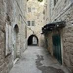
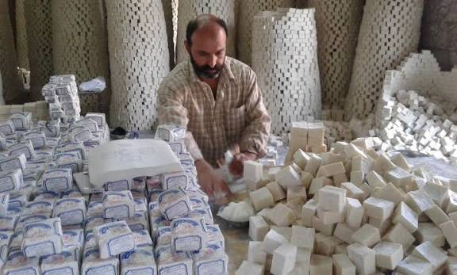
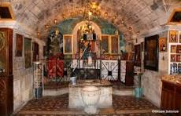

محتويات الصفحة
1. البلدة القديمة

تتميز البلدة القديمة في نابلس بالأزقة الحجرية والأسواق الشعبية والمباني التاريخية والحمامات التقليدية، وتعد مكاناً مناسباً للتعرف على التراث الفلسطيني.
مدة الزيارة: ساعة ونصف تقريباً.
اقرأ المزيد عن البلدة القديمة2. مصنع الصابون النابلسي

تشتهر نابلس بصناعة الصابون التقليدي المصنوع أساساً من زيت الزيتون، وهي حرفة تراثية ارتبطت بتاريخ المدينة واقتصادها منذ قرون.
مدة الزيارة: 45 دقيقة تقريباً.
خطوات صناعة الصابون
- تجهيز زيت الزيتون والمكونات اللازمة.
- خلط المكونات وتسخينها وفق الطريقة التقليدية.
- صب الخليط وتركه حتى يتماسك.
- تقطيع الصابون وتجفيفه.
3. بئر يعقوب

يقع بئر يعقوب في منطقة نابلس، وتوجد فوقه كنيسة أرثوذكسية، ويعد الموقع من الأماكن الدينية والتاريخية المعروفة في المنطقة.
مدة الزيارة: ساعة تقريباً.
4. جبل جرزيم

يرتفع جبل جرزيم فوق مدينة نابلس، وله أهمية دينية وتاريخية لدى الطائفة السامرية، كما يوفر إطلالات جميلة على المدينة والمناطق المحيطة بها.
مدة الزيارة: ساعة ونصف تقريباً.